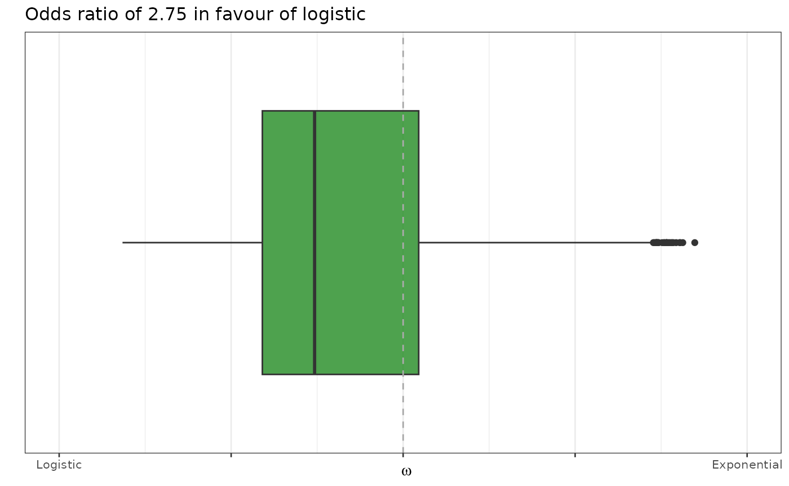
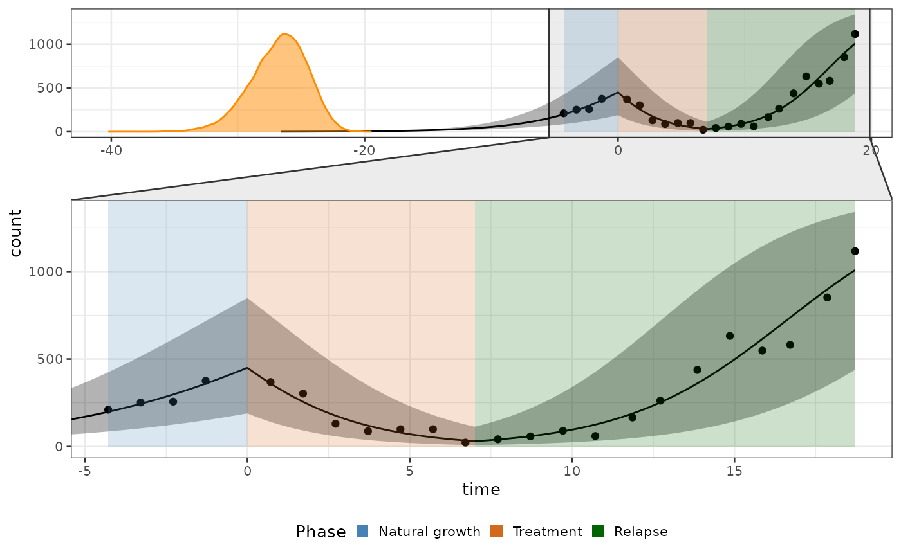
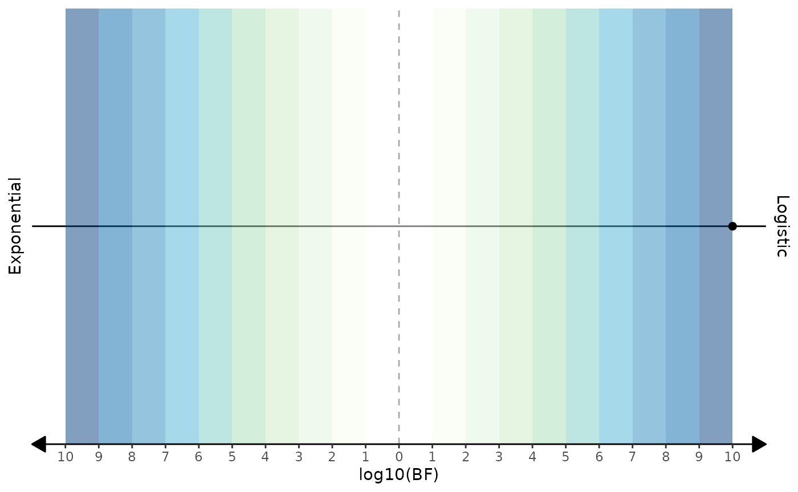

2. Fitting dynamics with known breakpoints
a2_task1.Rmd
library(biPOD)
require(dplyr)
#> Loading required package: dplyr
#>
#> Attaching package: 'dplyr'
#> The following objects are masked from 'package:stats':
#>
#> filter, lag
#> The following objects are masked from 'package:base':
#>
#> intersect, setdiff, setequal, unionThe problem of characterizing a tumor growth model when growth rates
change at known time-points while considering both exponential and
logistic growths can be tackled using biPOD. In this
vignette we are going to look at how to use biPOD for this
specific problem.
Input data
We take the xenografts data and we make it ready for
inference by preparing the count column and by dividing the
time column by a factor of 7 (in order to work with a unit
of time of a week).
Fit - Variational and no breakpoints
Let’s take a sample which does not undergo treatment and should therefore exhibit a natural growth with a single parameter. Hence, we are not going to consider any breakpoints for this sample.
mouse_id <- 537
d <- xenografts %>% dplyr::filter(mouse == mouse_id)
x <- biPOD::init(
counts = d,
sample = mouse_id,
break_points = NULL
)
#>
#> ── biPOD - bayesian inference for Population Dynamics ──────────────────────────
#> ℹ Using sample named: 537.
#> ! No group column present in input dataframe! A column will be added.Once the bipod object has been initialized it is
possible to visualize the data using the plot_input
function.
biPOD::plot_input(x, log_scale = F, add_highlights = T)Now, to fit the data for the first task one has to use the
fit function.
If you want to fit one specific type of growth
(exponential or logistic) you have to pass one
of the two to the parameter growth_type. Otherwise, if you
want to test both of them and choose the best one you have to set the
growth_type parameter to both.
Sometimes it might be helpful to scale the input data by a
factor_size, so that all the counts will be divided by
it.
When a population is decreasing or growing extremely slowly
()
the instant of time in which the population was born might be impossible
to infer. To deal with such situations, or when
is of no interest, just set the infer_t0 parameter to
FALSE.
In order to use a Variational Inference algorithm it suffice to set
the variational parameter to TRUE.
x <- biPOD::fit(
x,
growth_type = "both",
model_selection_algo = "mixture_model",
factor_size = 1,
variational = T
)
#> ℹ Fitting with model selection.
#> ! The first step of the inference will be performed using MCMC...Plot - Variational and no breakpoints
Diagnostics
The first plot to look at would be the one regarding the diagnostic
of the inference. In this case, having used VI, we are going to look at
the ELBO. To do so, let’s use the plot_elbo function which
requires a bipod object and the specification of which elbo
data we want to use since there might be multiple if we perform
different task on the same object.
biPOD::plot_elbo(x, elbo_data = x$fit_elbo, diagnose = T)Plot of fit
Use the function plot_fit to plot the fit resulting
after the inference of the first task.
Set zoom to TRUE to have a better view of
the observations and full_process to TRUE to
also plot the inferred value of
.
biPOD::plot_fit(x = x, zoom = T, full_process = T)
Plot posteriors
You can use the general function plot_posterior to plot
the posterior for a given parameters (use plot_posteriors
for a set of parameters).
The names of the available parameters can be found in one of the fit
objects inside the bipod object. For example in this case
let’s plot
.
print(x$fit$parameters)
#> [1] "lp__" "lp_approx__" "rho[1]" "t0" "K"
#> [6] "log_lik[1]" "log_lik[2]" "log_lik[3]" "log_lik[4]" "log_lik[5]"
#> [11] "log_lik[6]" "log_lik[7]" "log_lik[8]" "log_lik[9]" "log_lik[10]"
#> [16] "log_lik[11]" "log_lik[12]" "log_lik[13]" "log_lik[14]" "log_lik[15]"
#> [21] "log_lik[16]" "log_lik[17]" "log_lik[18]" "log_lik[19]" "log_lik[20]"
#> [26] "yrep[1]" "yrep[2]" "yrep[3]" "yrep[4]" "yrep[5]"
#> [31] "yrep[6]" "yrep[7]" "yrep[8]" "yrep[9]" "yrep[10]"
#> [36] "yrep[11]" "yrep[12]" "yrep[13]" "yrep[14]" "yrep[15]"
#> [41] "yrep[16]" "yrep[17]" "yrep[18]" "yrep[19]" "yrep[20]"
biPOD::plot_posterior(
x,
x_fit = x$fit,
par_name = "t0",
color = "maroon"
)
Model selection
Since we selected between exponential and logistic there is also the
possibility to visualize this decision. In this case, having used the
mixture_model algorithm we can plot it using the ``
biPOD::plot_mixture_model_omega(x, plot_type = "boxplot", color = "forestgreen")
Fit - MCMC and with breakpoints
Let’s now consider a sample that undergoes treatment and should therefore exhibit a multiple growth rates. For this tutorial we will work with two manually chosen breakpoints (i.e 0 and 7).
mouse_id <- 543
d <- xenografts %>% dplyr::filter(mouse == mouse_id)
x <- biPOD::init(
counts = d,
sample = mouse_id,
break_points = c(0, 7)
)
#>
#> ── biPOD - bayesian inference for Population Dynamics ──────────────────────────
#> ℹ Using sample named: 543.
#> ! No group column present in input dataframe! A column will be added.Now the input will be grouped in different time windows, as it can also be seen by plotting it.
biPOD::plot_input(x, log_scale = T, add_highlights = T)Let’s use again the fit function.
We want to use the MCMC algorithm so make sure to set the
variational parameter to FALSE.
Moreover, we are going to use bayes_factor as a model
selection algorithm.
x <- biPOD::fit(
x,
growth_type = "both",
model_selection_algo = "bayes_factor",
variational = FALSE
)Plot - MCMC and with breakpoints
Diagnostics
Let’s plot the diagnostic of the inference. In this case, having used
MCMC, we are going to look at the chains to see if they’ve mixed
properly. To do so, let’s use the plot_traces function
which requires a bipod object and the specification of
which fit we want to use since there might be multiple if we perform
different task on the same object.
biPOD::plot_traces(x, fit = x$fit, pars = NULL, diagnose = T)
#> ℹ The input vector 'pars' is empty. All the following parameters will be
#> reported: "lp__", "rho[1]", "rho[2]", "rho[3]", "t0", "K", "log_lik[1]",
#> "log_lik[2]", "log_lik[3]", "log_lik[4]", "log_lik[5]", "log_lik[6]",
#> "log_lik[7]", "log_lik[8]", "log_lik[9]", "log_lik[10]", "log_lik[11]",
#> "log_lik[12]", …, "yrep[22]", and "yrep[23]". It might take some time...
Plot of fit
Let’s use the function plot_fit. You can change the
legend using the parameter legend_labels and
legend_title.
biPOD::plot_fit(x = x, legend_labels = c("Natural growth", "Treatment", "Relapse"), legend_title = "Phase")
Plot of posteriors
Let’s use plot_posteriors function to plot all the
growth rates one against each other.
biPOD::plot_posteriors(
x,
x_fit = x$fit,
par_list = c("rho[1]", "rho[2]", "rho[3]")
)
Model selection
And finally, let’s plot the Bayes factor using the
plot_bayes_factor function.
biPOD::plot_bayes_factor(x, with_categories = F)